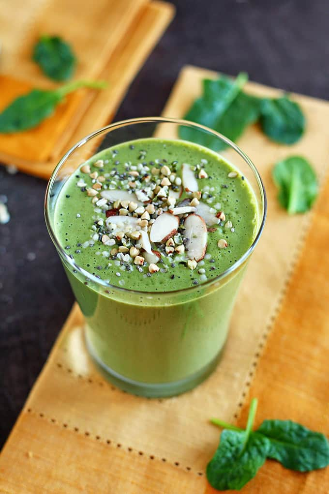

Glade Green Smoothie

Description
Ingredients
This is a smoothie recipe that will delight anyone you know, vegan or not. The perfect way to get your greens. Serves 2 comfortably, though might leave you wanting a little more.
Ingredients
- 1 cup unsweetened cashew milk
- 2 handfuls of spinach
- 2 frozen bananas
- 4-5 soft pitted dates
- 2 tbsp hemp hearts
- 1 large teaspoon peanut butter
- 4 ice cubes
Steps
- Combine all ingredients in high-speed blender.
- Blend on high until perfectly smooth and frothy.